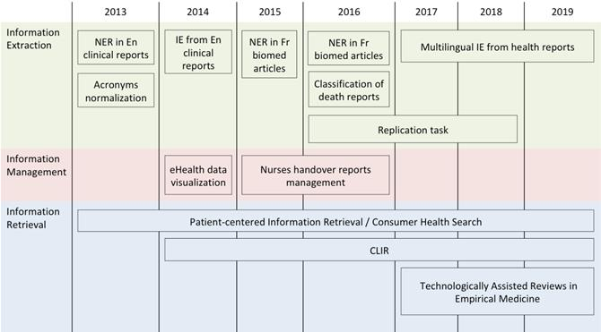
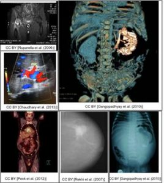
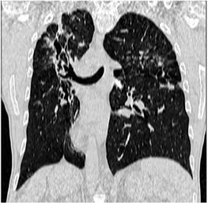
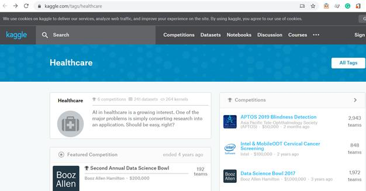
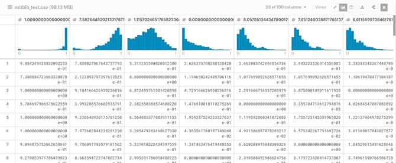
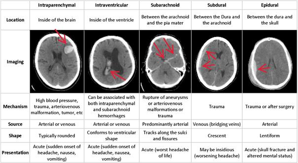

Data publicării: 02.11.2019
Autor articol: Adrian Iftene
Introducere
În domeniul medical implementarea algoritmilor de inteligență artificială (IA) poate ajuta activitatea medicilor, asistenților și pot duce la creșterea calității vieții pentru pacienții din spital sau care stau acasă. Aplicațiile web sau de pe mobil pot ajuta la supravegherea bolnavilor la ajutarea acestora în a urmări un program de medicație, etc. Algoritmii de inteligență artificială pot analiza foarte repede volume mari de date și pot face predicție privind starea de sănătate a pacienților sau predicție privind ce program de medicație ar fi mai potrivit pentru aceștia.
Pentru a putea implementa și pentru a putea analiza cu succes algoritmi de învățare automată sau care folosesc rețele neuronale și deep learning este nevoie să avem date colectate de la mai mulți pacienți din care algoritmii să poată învăța. Crearea acestor resurse foarte importante pentru algoritmii noștri este o activitate costisitoare ca timp și ca resurse umane care să fie implicate. În același timp, colectarea datelor se lovește de regulamentele GDPR care au intrat în vigoare anul trecut, dar prin anonimizare, pseudoanonimizare și criptarea datelor putem respecta ușor aceste cerințele din aceste regulamente.
Competiții ce folosesc date din domeniul medical
În continuare, vom vedea mai multe competiții organizate de diverse organizații, care au colectat date, au stabilit metrici de evaluare a algoritmilor implementați și au organizat competiții pentru a antrena comunitățile interesate de domeniile medicale și IA. Scopul acestor competiții este de a crește cunoașterea dintr-un anumit domeniu, dar și de a crea comunități interesate de subiecte comune pentru a putea colabora în proiecte comune în viitor.
CLEF – Conference and Labs of the Evaluation Forum
CLEF 2020 este cea de a 11-a conferință CLEF, care continuă campaniile de evaluare desfășurate începând cu anul 2000, contribuind la evaluarea sistematică a sistemelor ce accesează informații, în principal prin experimentarea exercițiilor puse la dispoziție de organizatori.
Bazându-se pe formatul introdus pentru prima dată în 2010, CLEF 2020 constă într-o conferință de tip peer-review pe o gamă largă de probleme în domeniile evaluării accesului la informații multilingve și multimodale și un set de laboratoare și ateliere concepute pentru a testa diferite aspecte ale sistemelor mono și multilingve de extragere a informațiilor. Împreună, conferința și seria de laboratoare mențin și extind de la an la an tradiția CLEF bazată pe comunitate care evaluează și colaborează pentru a rezolva probleme de interes comun.
Laboratoare
CLEF 2020 constă dintr-un set de 12 laboratoare concepute pentru a testa diferite aspecte ale sistemelor de căutare documentară multilingve și multimedia:
- ARQMath: Identificarea răspunsului pentru întrebări din domeniul matematică;
- BioASQ: indexare semantică pe scară largă a datelor din domeniul biomedical și oferirea răspunsurilor la întrebări;
- CheckThat!: identificarea și verificare automată a reclamațiilor;
- ChEMU: identificarea entităților de tip nume și extragerea de evenimente a reacțiilor chimice din brevete;
- eHealth: căutare și identificarea sensului în date cu conținut medical;
- eRisk: predicția timpurie a riscurilor pe internet;
- HIPE: identificarea persoanelor, a locurilor și a altor entități de tip istoric;
- ImageCLEF: căutare documentară în colecții de date multimedia din domeniile medicină, logistică și internet;
- LifeCLEF: căutare documentară de tip multimedia în natură;
- LiLAS: exerciții pentru căutare academică;
- PAN: stilometrie și criminalistică în texte digitale;
- Touché: căutarea argumentelor.
Comunitățile au ca obiective principale (însă fără a fi limitate la acestea): regăsirea informațiilor (de exemplu, text, imagini, audio, multimedia, social media, date citite cu ajutorul senzorilor), învățare automată, deep learning, extragere de date, procesare a limbajului natural, procesare de imagini și video; cu accent deosebit pe provocările multi-modale, multilingve și căutări interactive.
BioASQ – Large-scale Biomedical Semantic Indexing and Question Answering
Scopul atelierului de lucru BioASQ este de a împinge cercetarea din domeniu ce presupune construirea de sisteme care folosesc volume mari de informații diverse disponibile online pentru a răspunde la întrebări puse în limbaj natural de către oamenii de știință din domeniul biomedical. Necesitatea acestui exercițiu vine din faptul că în domeniul biomedical apar câte două articole la fiecare minut, ceea ce crește semnificativ volumul de date ce ar trebui analizat de către un cercetător din domeniu (Paliouras și Krithara, 2015).
eHealth: Retrieving and Making Sense of Medical Content
CLEF eHealth propune exerciții de evaluare din domeniul medical și biomedical. Scopul acestora este de a oferi cercetătorilor din domeniu date, platforme de evaluare și evenimente, unde să se poată întâlni și unde să poată discuta pe teme de cercetare comune. În Figura 2 de mai jos putem vedea evoluția acestora în timp.

ImageCLEF – Multimedia Retrieval in CLEF
ImageCLEF 2020 este o campanie de evaluare în care accentul se pune pe procesarea de imagini. Pentru ediția din 2020, ImageCLEF organizează 4 exerciții principale cu un obiectiv global de promovare a tehnologiilor de adnotare, indexare și regăsire de date vizuale. Un alt obiectiv important este acela de a oferi acces la colecții mari de imagini în diferite scenarii de utilizare și domenii de aplicație. Unul din exercițiile de evaluare este ImageCLEFMedical, care necesită procesarea imaginilor din domeniul medical. Acesta are la rândul său trei exerciții:
- Un exercițiu ce presupune oferirea de răspunsuri la întrebări (VQA) pe baza procesării informațiilor existente în imaginile medicale;
- Un exercițiu de analiză a etichetelor imaginilor – vezi Figura 3 în stânga;
Un exercițiu ce are ca tematică tuberculoza – vezi Figura 3 în dreapta.


Figura 3: Exercițiile de analiza a etichetelor (în stânga) și tuberculoză (în dreapta) de la ImageCLEF
Kaggle – Health
Competițiile Kaggle sunt concepute pentru a oferi provocări concurenților care doresc să se perfecționeze în domeniul învățării automate. Domeniile acestor competiții sunt foarte diverse, incluzând și domeniul medical. După cum se poate observa în Figura 4 de mai jos, în prezent sunt 6 competiții active, 241 colecții de date și 264 de kernel-uri disponibile.

În continuare voi vedea detalii despre două competiții în care studenții Facultății de Informatică sunt implicați în prezent: ECG Heartbeat Categorization Dataset și RSNA Intracranial Hemorrhage Detection.
ECG Heartbeat Categorization Dataset
Colecția de date este construită pornind de la două colecții de semnale cu bătăile inimii MIT-BIH Arrhythmia Dataset (Moody și Mark, 2001) și PTB Diagnostic ECG Database (Bousseljot et al., 1995). Numărul de eșantioane din ambele colecții este suficient de mare pentru a permite antrenarea unor rețele neuronale profunde. Formatul datelor poate fi vizualizat în Figura 5.

Această colecție de date a fost utilizată pentru a putea face clasificarea bătăilor inimii folosind sisteme ce au la bază modele construite cu ajutorul rețelelor neuronale profunde. Semnalele corespund unor electrocardiograme (ECG) cu bătăii ale inimii pentru cazul normal și cazurile cu diferite tipuri de aritmii și infarct miocardic. Aceste semnale sunt preprocesate și segmentate, fiecare segment corespunzând unei bătăi de inimă.
RSNA Intracranial Hemorrhage Detection
Hemoragia intracraniană (sângerarea care apare în interiorul craniului) este o problemă gravă de sănătate care necesită tratament medical rapid și deseori intensiv. De exemplu, hemoragiile intracraniene reprezintă aproximativ 10% din accidentele vasculare cerebrale din Statele Unite, unde accidentul vascular cerebral este a cincea cauză principală de deces. Identificarea locației și tipului oricărei hemoragii prezente este un pas esențial în tratarea pacientului.
Diagnosticul necesită o procedură de urgență. Când un pacient prezintă simptome neurologice acute, cum ar fi dureri de cap severe sau pierderea cunoștinței, specialiștii cu pregătire înaltă analizează imagini ale craniului pacientului pentru a căuta și identifica prezența, locația și tipul de hemoragie. Procesul este complicat și deseori este consumator de timp.
Competiția kaggle cere participanților să construiască un algoritm pentru detectarea hemoragiei intracraniene acute și a subtipurilor sale.

Concluzii
În acest raport am văzut câteva competiții organizate pe domeniul medical la exercițiile CLEF și kaggle. Avantajele participării la aceste competiții sunt diverse:
- se pot accesa resurse de dimensiuni mari, care permit construirea de algoritmi de inteligență artificială bazați pe învățare automată sau rețele neuronale,
- se pot evalua foarte ușor soluțiile obținute cu ajutorul platformelor specializate puse la dispoziție de organizatori, unde se folosesc diverse metrici care analizează calitatea soluțiilor,
- participanții crează o comunitate de specialiști, care discută pe tematici de interes comune, etc.
Referințe bibliografice
- Bousseljot, R., Kreiseler, D., Schnabel, A. (1995) Nutzung der EKG-Signaldatenbank CARDIODAT der PTB über das Internet. Biomedizinische Technik, Band 40, Ergänzungsband 1, S 317.
- de Matos, P., Alcántara, R., Dekker, A., Ennis, M., Hastings, J., Haug, K., Spiteri, I., Turner, S., Steinbeck, C. (2010) Chemical Entities of Biological Interest: an update. Nucleic Acids Research. 38 (Database issue): D249–54. doi:10.1093/nar/gkp886
- Moody, G. B., Mark, R. G. (2001)The impact of the MIT-BIH Arrhythmia Database. IEEE Engineering in Medical and Biology, 20(3), pp. 45-50 (PMID: 11446209).
- Paliouras, G., Krithara, A. (2015) BioASQ – Project Vision and Overall approach. http://www.bioasq.org/sites/default/files/BioASQ_Overall-presentation.pdf